전자계산기기능사 (2016-04-02 기출문제)
1과목: 전기전자공학
1. 실제 펄스 파형의 구간별 명칭에 대한 설명으로 틀린 것은?
- 상승 시간(rise time)이란 입력 펄스의 최대 진폭의 10%에서 90%까지 상승하는데 걸리는 시간
- 하강 시간(fall time)이란 펄스의 하강 속도를 나타내는 척도로서 최대 90%에서 10%까지 하강하는데 소요되는 시간
- 새그(sag)란 이상적인 펄스 파형의 상승하는 부분이 기준 레벨보다 높은 부분
- 링잉(ringing)은 높은 주파수에서 공진되기 때문에 발생하는 것으로 펄스 상승 부분의 진동의 정도
(정답률: 75%)

2. 진폭 변조에서 변조된 파형의 최대값 전압이 35 V 이고 최소값 전압이 5 V 일 때 변조도는?
- 0.60
- 0.65
- 0.70
- 0.75
(정답률: 59%)
3. 다음 회로에 교류 전압 νi 를 가하면 출력 νo 의 파형은? (단, 0<E<Vm이며, 다이오드의 특성이 이상적일 경우로 가정한다.)
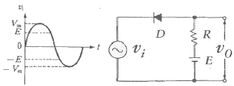
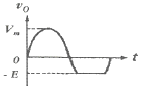
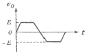
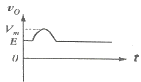
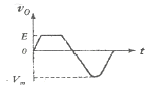
(정답률: 55%)
4. 다음 연산증폭기를 이용한 비교기 회로에서 히스테리시스 전압(VHYS)은 몇 V 인가? (단, +Vout(max)는 +5V이고 –Vout(max)는 –5V이다.)
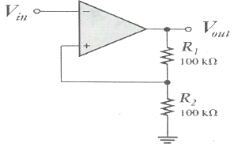
- 5
- 10
- 15
- 20
(정답률: 47%)
5. 차동 증폭기에서 우수한 차동 특성를 나타내려면 동상 신호 제거비(common mode rejection ratio, CMRR)는?
- 동상 신호 제거비는 클수록 좋다.
- 동상 신호 제거비는 작을수록 좋다.
- 차동 이득에 비해 동위상 이득이 커야 한다.
- 동상 신호 제거비는 0 일 때가 좋다.
(정답률: 52%)
6. 6Ω과 3Ω의 저항을 직렬로 접속할 경우는 병렬로 접속할 경우의 몇 배가 되는가?
- 3
- 4.5
- 6
- 7.5
(정답률: 66%)
7. 다음 그림의 회로에서 시정수 τ는 몇 ms 인가?
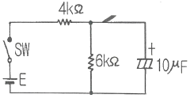
- 24
- 40
- 60
- 100
(정답률: 59%)
8. 이상적인 연산 증폭기의 특징에 대한 설명으로 틀린 것은?
- 주파수 대역폭이 무한대(∞)이다.
- 입력 임피던스가 무한대(∞)이다.
- 동상 이득은 무한대(∞)이다.
- 오픈 루프 전압 이득이 무한대(∞)이다.
(정답률: 54%)
9. 아래 도면에 나타낸 것은 무엇의 기호인가?
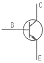
- PNP형 트랜지스터
- NPN형 트랜지스터
- 포토인터럽드(photointerrupter)
- 실리콘 제어 정류기(SCR)
(정답률: 69%)
10. 수정 발진 회로 중 피어스 B-E형 발진 회로는 컬렉터-이미터 간의 임피던스가 어떻게 될 때가 가장 안정한 발진을 지속하는가?
- 용량성
- 유도성
- 저항성
- 용량성 혹은 저항성
(정답률: 64%)
2과목: 전자계산기구조
11. 연관 기억장치(Associative Memory)의 설명 중 가장 옳지 않은 것은?
- 주소의 개념이 없다.
- 속도가 늦어 고속 검색에는 부적합하다.
- 병렬 동작을 수행하기 때문에 많은 논리회로로 구성되어 있다.
- 기억된 정보의 일부분을 이용하여 원하는 정보가 기억되어 있는 위치를 찾아내는 기억장치이다.
(정답률: 51%)
12. 입출력장치와 CPU의 실행 속도차를 줄이기 위해 사용하는 것은?
- Parallel I/O Device
- Channel
- Cycle steal
- DMA
(정답률: 70%)
13. 다음 그림은 어떤 논리 연산을 나타낸 것인가?
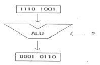
- MOVE
- AND
- OR
- Complement
(정답률: 63%)
14. 휴대용 무전기와 같이 데이터를 양쪽 방향으로 전송할 수 있으나, 동시에 양쪽 방향으로 전송할 수 없는 전송 방식은?
- 단일 방식
- 단방향 방식
- 반이중 방식
- 전이중 방식
(정답률: 71%)
15. 00001111 과 11110000 의 OR 논리 연산 결과는?
- 00000000
- 11111111
- 00001111
- 11110000
(정답률: 79%)
16. 순차 접근 저장매체(SASD)에 해당하는 것은?
- 자기 드럼
- 자기 테이프
- 자기 디스크
- 자기 코어
(정답률: 72%)
17. 컴퓨터와 인간의 통신에 있어서 자료의 외부적 표현 방식으로 가장 흔히 사용되는 코드는?
- 3초과 코드
- Gray 코드
- ASCII 코드
- BCD 코드
(정답률: 71%)
18. 0-9의 10진법의 수치는 2진법의 최저 몇 비트(Bit)로 표현되는가?
- 3 비트
- 4 비트
- 6 비트
- 8 비트
(정답률: 66%)
19. 다음 중 게이트당 소비 전력이 가장 낮은 것은?
- ECL
- TTL
- MOS
- CMOS
(정답률: 70%)
20. 병렬전송에 대한 설명 중 틀린 것은?
- 하나의 통신회선을 사용하여 한 비트씩 순차적으로 전송하는 방식이다.
- 문자를 구성하는 비트 수만큼 통신 회선이 필요하다.
- 한 번에 한문자를 전송하므로 고속처리를 필요로 하는 경우와 근거리 데이터 전송에 유리하다.
- 원거리 전송인 경우 여러 개의 통신회선이 필요하므로 회선 비용이 많이 든다.
(정답률: 59%)
21. 주소지정방식 중에서 명령어가 현재 오퍼랜드에 표현된 값이 실제 데이터가 기억된 주소가 아니고, 그 곳에 기억된 내용이 실제의 데이터 주소인 방식은?
- 간접 주소지정방식(Indirect addressing)
- 즉시 주소지정방식(Immediate addressing)
- 상대 주소지정방식(Relative addressing)
- 직접 주소지정방식(Direct addressing)
(정답률: 60%)
22. 하나의 채널이 고속 입출력 장치를 하나씩 순차적으로 관리하며, 블록(Block) 단위로 전송하는 채널은?
- 사이클 채널(Cycle channel)
- 셀렉터 채널(Selector channel)
- 멀티플렉서 채널(Multiplexer channel)
- 블록 멀티플렉서 채널(Block multiplexer channel)
(정답률: 54%)
23. 다음 중 LSI회로는?
- DECODER
- MULTIPLEXER
- 4 BIT LATCH
- PLA
(정답률: 55%)
24. 마이크로 오퍼레이션에 대한 정의로 가장 적합한 것은?
- 컴퓨터의 빠른 계산 동작
- 2진수 계산에서 쓰이는 동작
- 플립플롭 내에서 기억되는 동작
- 레지스터 상호간에 저장된 데이터의 이동에 의해 이루어지는 동작
(정답률: 53%)
25. 중앙처리장치(CPU)내의 기억 기능을 수행하는 요소는?
- 레지스터(Register)
- 연산기(A.L.U)
- 제어 버스(Control bus)
- 주소 버스(Address bus)
(정답률: 68%)
26. 일반적인 컴퓨터의 내부구조를 설명할 때 사용하는 연산방식이 아닌 것은?
- 2진수 연산
- 6진수 연산
- 8진수 연산
- 16진수 연산
(정답률: 73%)
27. 입력 단자에 나타난 정보를 코드화 하여 출력으로 내보내는 것으로 해독기와 정반대의 기능을 수행하는 조합 논리회로는?
- Adder
- Flip-Flop
- Multiplexer
- Encoder
(정답률: 65%)
28. 부동 소수점으로 표현된 수가 기억장치 내에 저장되어 있을 때 비트를 필요로 하지 않는 것은?
- 부호(sign)
- 지수(exponent)
- 소수(mantissa)
- 소수점(decimal point)
(정답률: 68%)
29. 사진이나 그림 등에 빛을 쪼여 반사되는 것을 판별하여 복사하는 것처럼 이미지를 입력하는 장치는?
- 플로터
- 마우스
- 프린터
- 스캐너
(정답률: 71%)
30. 컴퓨터 내부에 있으며, 연산 결과를 일시 보관하는 기억 장치는?
- Accumulator
- Magnetic memory
- shift register
- Buffer register
(정답률: 63%)
3과목: 프로그래밍일반
31. 인터프리터 방식의 언어는?
- GWBASIC
- COBOL
- C
- FORTRAN
(정답률: 44%)
32. 정해진 데이터를 입력하여 원하는 출력 정보를 얻기 위하여 적용할 처리 방법과 순서를 기호로 설계하는 과정은?
- 문제 분석
- 순서도 작성
- 프로그램의 코딩
- 프로그램의 문서화
(정답률: 65%)
33. 고급 언어의 특징으로 옳지 않은 것은?
- 기종에 관계없이 사용할 수 있어 호환성이 높다.
- 2진수 형태로 이루어진 언어로 전자계산기가 직접 이해할 수 있는 형태의 언어이다.
- 하드웨어에 관한 전문적 지식이 없어도 프로그램 작성이 용이하다.
- 프로그래밍 작업이 쉽고, 수정이 용이하다.
(정답률: 61%)
34. 유닉스(UNIX) 운영 체제를 개발하는데 사용된 언어는?
- FORTRAN
- PASCAL
- BASIC
- C
(정답률: 62%)
35. 프로그래밍 작성 절차 중 다음 설명에 해당하는 것은?
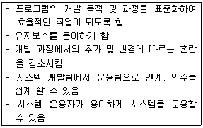
- 프로그램 구현
- 프로그램 문서화
- 문제 분석
- 입·출력 설계
(정답률: 71%)
36. C언어에서 문자열 출력 함수로 사용되는 것은?
- putchar()
- getchar()
- gets()
- puts()
(정답률: 63%)
37. 프로그램 작성시 반복되는 일련의 명령어들을 하나의 명령으로 만들어 실행시키는 방법은?
- 매크로
- 디버깅
- 스케줄링
- 모니터
(정답률: 69%)
38. 구조적 프로그래밍에 대한 설명으로 거리가 먼 것은?
- 유지보수가 용이하다.
- 프로그램의 구조가 간결하다.
- 모듈별 독립성과 처리의 효율성이 고려된다.
- 실행 속도는 빠른 편이나 프로그램의 내용을 파악하기가 까다롭다.
(정답률: 53%)
39. 다음 기능에 대한 설명으로 알맞은 것은?
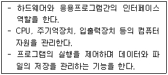
- 컴파일러(Compiler)
- 운영체제(Operating System)
- 로더(Loader)
- 그래픽 유저 인터페이스(GUI: Graphic User Interface)
(정답률: 63%)
40. 프로그램 수행을 위하여 사용자의 프로그램을 필요한 루트와 함께 메모리에 적재시키는 시스템 프로그램은?
- 컴파일러(compiler)
- 어셈블러(assembler)
- 로더(loader)
- 매크로(macro)
(정답률: 54%)
4과목: 디지털공학
41. 그림과 같은 회로와 연산 결과가 동일한 논리 회로는 어느 것인가?
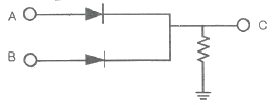
- AND
- OR
- NAND
- NOR
(정답률: 52%)
42. 회로의 안정 상태에 따른 멀티바이브레이터의 종류가 아닌 것은?
- 비안정 멀티바이브레이터
- 주파수 안정 멀티바이브레이터
- 단안정 멀티바이브레이터
- 쌍안정 멀티바이브레이터
(정답률: 65%)
43. 조합 논리회로에 해당하지 않는 것은?
- 비교 회로
- 패리티 체크 회로
- 인코더 회로
- 계수 회로
(정답률: 43%)
44. 불 대수의 기본 정리 중 옳지 않은 것은?
- Aㆍ0 = 0
- AㆍA = A
- A + A = A
- A + 1 = A
(정답률: 65%)
45. 다음 계수기 회로의 올바른 명칭은?
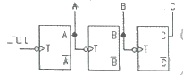
- 동기식 4진링계수기
- 동기식 8진링계수기
- 비동기식 4진리플계수기
- 비동기식 8진리플계수기
(정답률: 46%)
46. 다음 중 시프트 레지스터를 이용하여 수행되는 연산은?
- 덧셈
- 뺄셈
- 곱셈
- 비교
(정답률: 56%)
47. 동기형 계수 회로의 설명 중 옳지 않은 것은?
- 병렬 계수기라고도 한다.
- 리플 계수기 보다 속도가 빠르다.
- 해독기를 사용할 때 펄스의 일그러짐이 크다.
- 하나의 공통된 클록 펄스에 의해서 플립플롭들이 트리거 된다.
(정답률: 49%)
48. 플립플롭 회로가 불확정한 상태가 되지 않도록 반전기(NOT gate)를 설치한 회로는?
- JK-FF
- RS-FF
- T-FF
- D-FF
(정답률: 38%)
49. 3초과 부호 (1001 0111 0101)를 BCD 부호로 고치면?
- (0110 0100 0010)BCD
- (0010 0100 0110)BCD
- (0101 0111 1001)BCD
- (0110 1000 1010)BCD
(정답률: 47%)
50. 전원 공급에 관계없이 저장된 내용을 반영구적으로 유지하는 비휘발성 메모리는?
- RAM
- ROM
- SRAM
- DRAM
(정답률: 66%)
51. 1×4 디멀티플렉서에 최소로 필요한 선택 선의 개수는?
- 1개
- 2개
- 3개
- 4개
(정답률: 61%)
52. 2진수 1011110112을 16진수로 변환하면?
- 17A16
- 17B16
- 17C16
- 17D16
(정답률: 60%)
53. 클럭 펄스가 들어올 때마다 플립플롭의 상태가 반전되는 것을 무엇이라고 하는가?
- 리셋
- 클리어
- 토글
- 트리거
(정답률: 65%)
54. 반가산기에서 입력 A = 1 이고, B = 0 이면 출력 합(S)과 올림수(C)는?
- S = 1, C = 0
- S = 0, C = 0
- S = 1, C = 1
- S = 0, C = 1
(정답률: 63%)
55. 다음 논리 IC 중 속도가 가장 빠른 것은?
- DTL
- ECL
- CMOS
- TTL
(정답률: 55%)
56. 두 수를 비교하여 그들의 상대적 크기를 결정하는 조합 논리 회로는?
- 가산기
- 디코더
- 비교기
- 모뎀
(정답률: 68%)
57. 다음 중 2진(binary) 연산이 아닌 것은?
- AND
- OR
- Shift
- 4칙연산
(정답률: 51%)
58. 클록 펄스가 가해질 때마다 출력 상태가 반전하므로 계수기에 많이 사용되는 플립플롭은?
- D-FF
- T-FF
- RS-FF
- JK-FF
(정답률: 49%)
59. JK 플립플롭에서 J입력과 K입력이 1일 때 출력은 clock에 의해 어떻게 되는가?
- 0
- 1
- 반전
- 현 상태 그대로 출력
(정답률: 66%)
60. 아래 진리표에 해당하는 논리게이트의 명칭은?
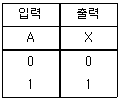
- AND
- 버퍼(Buffer)
- 인버터(Inverter)
- 배타적 논리합(XOR)
(정답률: 58%)